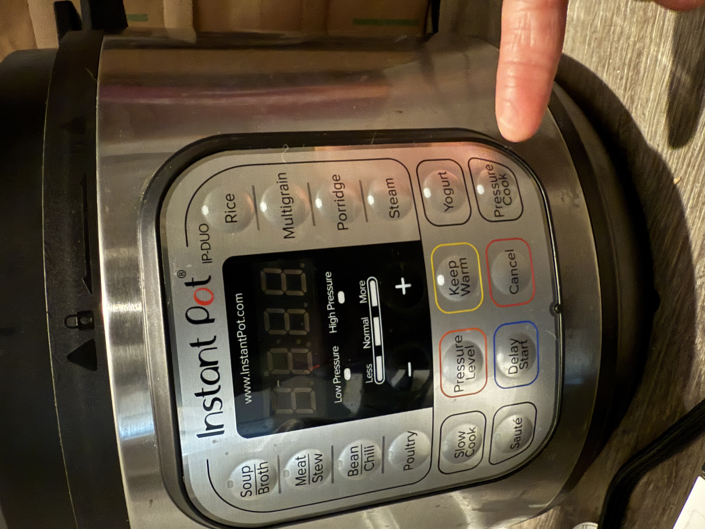

Home
InstaPot Chili

My take on the classic chili. I cook it with the InstaPot so it doesn't take all day to cook.
You can cook this meal within an hour. It's a great way to get protein and nutrition especially going into
flu season.
Ingredients
- 2 pounds ground beef
- 1 onion chopped up
- 1 Tablespoon chili powder
- 2 tablespoons cumin
- 1/8 teaspoon cayenne powder(you can add more if you like spice)
- 1 teaspoon onion powder
- 2 teaspoon oregano powder
- 1 teaspoon sale
- 1/2 teaspoon black pepper
- 1 & 1/4 cup beef broth
- 1 can of diced tomatoes about 14oz(undrained)
- 1 can kidney bean(drained)
- 1 can of black beans(drained)
- 1 can of corn(undrained)
Optional topping items
- Cheese
- Jalapeno
- Sour cream
- Corn bread
- Chips
- Chives
Steps
- On stove top warm a pan with some oil
- Add onions and ground beef until brown, don't need to over cook
- Drain and take cooked ground beef into InstaPot
- Add all other ingredients and stir
- Close lid and set InstaPot to pressure cook for 20 minutes. Setting should be high pressure
and Normal.

- Once InstaPot says it's done, let it sit for about 10 minutes before manually releasing the
rest of the pressure
- Open lid away from your face and top with your favorite toppings
Side notes
You'll notice that this chili isn't spicy which me and my kids prefer. If you need to spice it
up you can add more
cayenne and chili powder. You can adjust the beans you use on you'r chili if you don't have
kidney or black beans in the house.